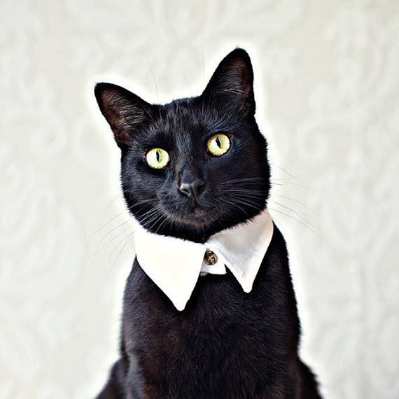

Date of birth: 27.04.1994
Mobile: +375 29 355 13 02
E-mail: teddy_katz@mail.ru

Date of birth: 27.04.1994
Mobile: +375 29 355 13 02
E-mail: teddy_katz@mail.ru
Feb 2020 - current RS School
Aug 2019 - Nov 2019 IT-academy (Web application development)
March 2019 - June 2019 IT-academy (Website development)
2011 - 2015 BSEU, marketing and logistics. Logistics Bsc.
Jan 2018 - Jan 2020 Deputy head of the department
July 2017 - Jan 2020 Supplier relationship manager
July 2015 - June 2017 Logistics manager